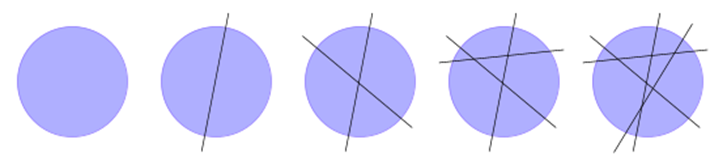
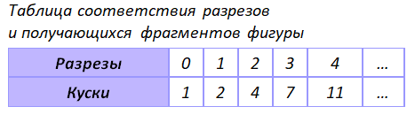
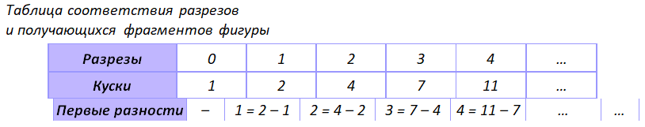
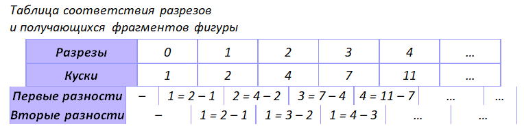
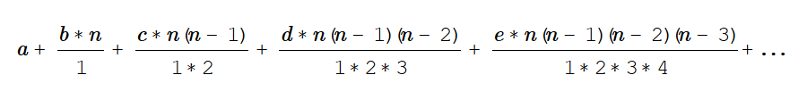
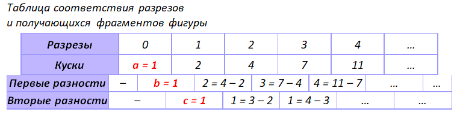
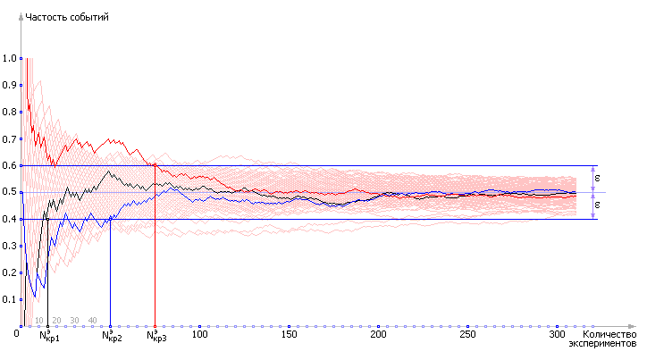

Описание системы необходимо для предсказания её поведения в будущем. Тип описания соответствует типу систем. Различают как минимум: статические, динамические,
стохастические, адаптивные системы.
Статические системы были известны уже Архимеду, величайшему инженеру древности. Закон рычага, блока, лебёдки, полиспаста - этими законами Архимед ввёл в описание
пространство. Например, известное вам уравнение момента силы для качелей: F1*x1=F2*x2. Установив законы,
Архимед с успехом конструировал из простых механизмов достаточно сложные системы.
Первым достоверно выявил связь времени и пространства Галилео Галилей. Экспериментируя с падающими предметами с башни города Пизы, он установил связь
пути S, который проходит любой предмет в поле тяготения Земли, со временем его свободного падения t: S=gt2/2.
В соборе города Пизы (напротив знаменитой падающей башни) Галилей наблюдал за качающимися от сквозняка люстрами и установил связь между периодом их колебаний T
и длиной подвеса L: T=2?√(L/g). Вдумайтесь, в этих формулах нет ничего кроме характеристик пространства S, времени t и среды g,
в которой находится предмет. Фактически были описаны оба типа движения: поступательное и вращательное (колебательное).
Описание мира обрело время и движение. Гений Ньютона ввёл формулу описания мира, содержащую все его законы. Ньютон обратил внимание на различия,
разности или, как он их назвал, флюксии.
Пример. Обнаружение и описание закономерности формулой Ньютона.
Допустим, что нам нужно решить «Задачу о разрезаниях», то есть надо предсказать, сколько минимально потребуется разрезов в виде прямых линий, чтобы разделить фигуру на
заданное число кусков (для примера достаточно, чтобы фигура была выпуклой).
Попробуем решить эту задачу вручную.

Из рисунка видно, что при 0 разрезах образуется 1 кусок, при одном разрезе образуется 2 куска, при двух — 4, при трёх — 7, при четырёх — 11.
Можете ли вы сейчас сказать наперёд, сколько потребуется разрезов для образования, например, 821 кусок? По-моему, нет! Почему вы затрудняетесь? — Вам неизвестна
закономерность K = f(р), где K — количество кусков, р — количество разрезов. Как обнаружить закономерность?
Составим таблицу, связывающую известные нам числа кусков и разрезов.

Пока закономерность не ясна. Поэтому рассмотрим разности между отдельными экспериментами и посмотрим, чем отличается результат одного эксперимента от другого.
Поняв разницу, мы найдём способ перехода от одного результата к другому, то есть закон, связывающий K и р.

Уже кое-какая закономерность проявилась, не правда ли? Вычислим вторые разности.

Очевидно, что далее продолжать процедуру вычисления разностей смысла нет. Теперь все просто. Функция f называется производящей функцией.
Если она линейна, то первые разности равны между собой. Если она квадратичная, то вторые разности равны между собой. И так далее.
Функция f есть частный случай формулы Ньютона:

Коэффициенты a, b, c, d, e для нашей квадратичной функции f находятся в первых ячейках строк экспериментальной таблицы.

Итак, закономерность есть, и она такова:
K =a + b · p + c · p · (p – 1)/2 = 1 + p + p · (p – 1)/2 = 0.5 · p2 + 0.5 · p + 1.
Теперь, когда закономерность определена, можно решить обратную задачу и ответить на поставленный вопрос: сколько надо выполнить разрезов,
чтобы получить 821 кусок?
Задача: K = 821 (гипотеза), K = 0.5 · p2 + 0.5 · p + 1 (модель), p = ? (вопрос).
Решаем квадратное уравнение 821 = 0.5 · p2 + 0.5 · p + 1, находим и выбираем подходящий корень: p = 40.
Составленная по ряду данных модель дала возможность находить ответы на любые вопросы, связанные с ней. Произошло это за счет установления причинно-следственной связи между
переменными К и р.
Задания
Во время эксперимента Галилей фиксировал путь S, пройденный брошенным телом, и время его полета t. Получилась такая экспериментальная таблица:
Время, t
0
1
2
3
4
5
Путь, S
0
5
20
45
80
...
Используя метод и формулу Ньютона, найдите зависимость S(t).
У куба в зависимости от размерности пространства (N=0,1,2,3,4, …) можно экспериментально определить и указать количество вершин В (нульмерных объектов),
ребер Р (одномерных объектов), граней Г (двухмерных объектов), тел Т (трёхмерных объектов) и так далее (любых К-мерных объектов). Используя таблицу экспериментальных данных, найдите зависимость В(N), Р(N), Г(N), Т(N), …, К(N).
Обобщите полученные формулы в одну алгебраическую конструкцию. Примечание. Вам придется учесть, что Вы будете иметь дело с производящей формулой второго порядка сложности. Важное замечание: через любое конечное число точек можно провести бесконечное количество разных кривых. Экспериментально снять удаётся только конечное число точек.
Как вы считаете, увидев последовательность чисел: 0,1,2,3,… , какое будет следующее число? Логика подсказывает, что «4», и напрашивается закон f1=n.
Однако, можно предложить такой закон: f2=n+n*(n-1)*(n-2)*(n-3)/24.
Можете проверить с калькулятором в руках, этот закон также генерирует последовательность 0,1,2,3,…, но дальнейшее её продолжение удивляет: …5,10,21, … .
Просто, f2 сложнее, чем f1, f2 содержит f1внутри себя. И с увеличением и разнообразием экспериментов
выясняется, что мир сложнее, чем мы его себе представляли.
Поставьте несколько точек на график. Проведите различные кривые, которые проходят через эти точки. Таких зависимостей f(n) можно построить бесконечно много.
Чтобы определиться с такими ситуациями, в науке используют принцип Оккама: «Не вводи сущностей без надобности». Скажем так, большая часть точности достигается
простыми законами, сложные поправки дают меньший вклад в точность ответа. В дальнейшем, при осознанной необходимости добавляют: «от простого к сложному».
Сначала испытай простое, если точности не хватает, вводи новые сущности и связи.
В выражении динамической системы первого порядка содержится разность двух состояний системы в два разных момента времени. Это значит, что для определения
следующего состояния система учитывает свое прошлое состояние. Если на будущее состояние системы оказывают дополнительно ещё более ранние состояния, то порядок системы
повышается, а сложность её поведения увеличивается. Можно сказать, что такая система в своем составе содержит механизм памяти. Для учёта предыдущих состояний в текущий
момент предыдущие значения должны находиться в памяти системы и по обратной связи поданы к моменту определения текущего состояния. Поэтому динамические системы - это
системы с обратной связью, помнящие своё прошлое. Разность двух состояний, отнесённая к расстоянию между ними, отмеченная Ньютоном, - важнейшая математическая конструкция,
в последствии названная производной.
Стохастические системы - системы, чрезвычайная сложность устройства которых не даёт возможности предсказать точно их будущее состояние. Описание таких систем возможно
усреднением значений многократных экспериментов, а возможные траектории их поведения вместе образуют коридор траекторий. Ряд ученых придерживается даже того мнения,
что существует чистая случайность в выборе возможностей поведения систем, которая не зависит от глубины нашего знания о них. Стохастические системы могут быть описаны
неравенствами, когда конкретное поведение x(t) находится между двух крайних положений: x1(t)<x(t)<x2(t). Активно рассматривали
понятие случайности и ее характеристику «вероятность» Бернулли, Лагранж.

Рисунок – Характерное поведение частоты выпадения решки в зависимости от количества подбрасываний монетки. Показан результат ста экспериментов по 300 бросков в каждом. Частота выпадения решки на
графике приближается к теоретическому значению вероятности 0.5
Ещё более сложными являются адаптивные системы, которые включают в себя механизм рефлексии. Они все время перестраиваются, меняют свою структуру и состав, правила поведения.
Такие системы можно назвать интеллектуальными. Первым рассмотрел такие системы в рамках науки синергетики И.Р. Пригожин.
Дополнительным усложнением рассмотренных систем является увеличение количества элементов, например, многовходовые системы, и сложности связей, например, нелинейные системы.